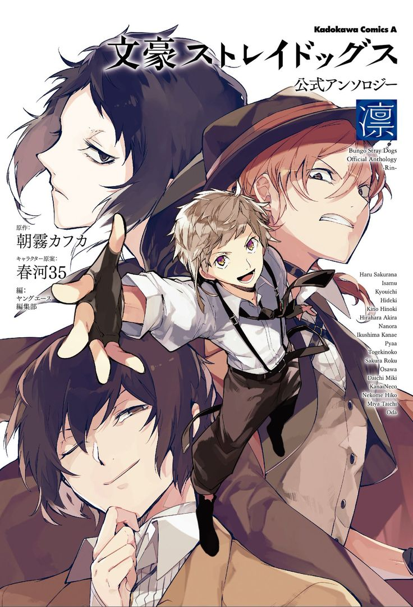

Bungo Stray Dogs
Thể loại: Hành động, Tâm lý
Mô tả:
Bungo Stray Dogs là một bộ hành động – siêu năng lực – trinh thám – tâm lý lấy cảm hứng từ các nhà văn nổi tiếng, khi mỗi nhân vật đều mang tên và năng lực liên quan đến tác phẩm của họ. Truyện kết hợp những pha hành động căng thẳng với các màn đấu trí, đồng thời khai thác nỗi đau, lý tưởng và quá khứ của từng nhân vật trong thế giới ngầm.
Tóm tắt cốt truyện:
Atsushi Nakajima là một thiếu niên mồ côi bị đuổi khỏi trại trẻ và đứng trước bờ vực tuyệt vọng. Cuộc đời cậu thay đổi khi gặp Dazai Osamu, một thành viên của Văn Phòng Thám Tử Vũ Trang — nơi quy tụ những người sở hữu năng lực siêu nhiên và chuyên giải quyết các vụ việc nguy hiểm. Atsushi gia nhập văn phòng và dần học cách kiểm soát năng lực của mình, đồng thời bị cuốn vào cuộc xung đột với các tổ chức khác, đặc biệt là Port Mafia — thế lực ngầm tàn nhẫn không kém phần phức tạp. Khi những âm mưu chồng chéo và các thế lực mới xuất hiện, ranh giới giữa chính nghĩa và tội ác ngày càng mờ nhạt. Bungo Stray Dogs là câu chuyện về sự tồn tại, giá trị bản thân và lựa chọn sống, nơi mỗi nhân vật đều mang trong mình lý do riêng để tiếp tục bước đi.
Bình luận
Vui lòng đăng nhập để bình luận.